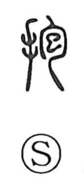

抱

Uncategorized
Kun: daku, idaku, kakaeru | On: hou
to embrace ・ to hold in the arms ・ to hug
Explanation
This is a phono-semantic character: the component 包 supplies the sound and the notion of wrapping, its ancient form depicting an embryo enclosed in the womb. Combined with the hand element, the graph shows enclosing something with the arms, hence 'to hold' or 'to embrace.' In the Laozi (chapter 19), the phrase 抱朴, 'to embrace the uncarved block,' means preserving the original simplicity of the human heart.